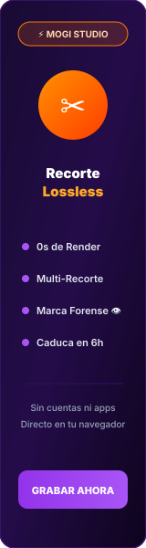
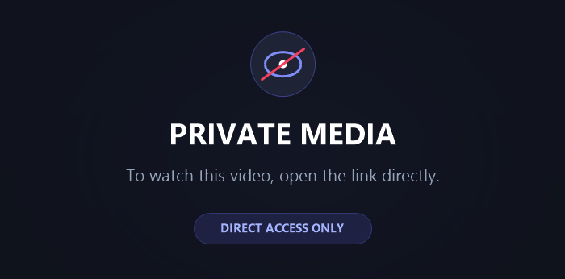

Instant Clip Sharing with
Zero-Egress Direct Delivery &
In-Browser GPU Transcode
Engineered by Walter (@walterdotblend) to permanently conquer Discord's 10MB limit. Combines Cloudflare R2 object storage with client-side WebCodecs encoding for sub-second, cost-free video distribution.
End-to-End Scalable Pipeline
A streamlined four-stage architecture engineered for high concurrency, zero server transcoding load, and instant Discord playback.
WebCodecs Transcoding
Videos are processed directly in the user's browser using MediaBunny and WebCodecs GPU pipelines. Compresses files locally without spending server CPU cycles.
Direct Cloudflare R2 Upload
Pre-signed S3-compatible URLs pipe media directly to Cloudflare R2. Bypasses application server bottlenecks and completely eliminates outbound egress bandwidth costs.
Discord Bot v14 & /clip
Built on Discord.js v14 with slash commands, ephemeral administrative controls, and top.gg automated verification. Returns rich embed video cards instantaneously.
Dual-Mode Security & Stream
Separates public playback links from permanent HMAC-signed Creator management URLs. Enables instant one-click link revocation and tamper protection.
Designed for Creators & Communities
Explore the specific modular subsystems powering the production deployment of zylo.stream.
Interactive Discord Slash Integration
Gamers and creators can share high-definition highlights directly from Discord without paying for Nitro subscriptions. Zylo embeds auto-unfurl with inline HTML5 video players.
- ✓ `/clip` Slash Command: Converts raw media into lightweight streaming cards.
- ✓ Embed Video Previews: Instant playback on desktop, iOS, and Android Discord clients.
- ✓ Automated Top.gg Verification: Unlocks tier rewards and perks dynamically upon user votes.
Client-Side Hardware Accelerated WebCodecs
Traditional platforms waste hundreds of dollars per month on cloud server transcoding CPU instances. Zylo executes the entire transcode process directly on the user's local GPU before transmission.
- ✓ 0 Server Transcoding Latency: Instant upload without waiting in queue.
- ✓ MediaBunny WebAssembly: Fast H.264 video compression directly in memory.
- ✓ Quality Presets: Lossless, Balanced, and Ultra-Speed compression modes.

Dual-Mode Privacy & Revocation Killswitch
Creators retain full sovereign control over their content. Every uploaded clip generates two distinct cryptographically secure URLs.
- ✓ Public Watch URL: Clean, shareable streaming link without management controls.
- ✓ Creator Master Secret: Permanent access to delete or revoke links at any moment.
- ✓ Instant Revoke: Deactivates public viewing instantly without deleting audit records.

Real-Time Moderation & Telemetry Console
A built-in administrative suite protected by HMAC session cookies. Provides platform operators with live visibility into bandwidth consumption, active links, and security alerts.
- ✓ Live Storage Tracker: Monitors exact Megabytes stored in Cloudflare R2.
- ✓ Instant Search & Filter: Look up clips by unique ID, date, or status.
- ✓ Security Audit Log: Tracks IP hashes, views, and automated abuse reports.
Experience the Zylo Pipeline
Click the trigger below to simulate how Zylo compresses, uploads, and generates an instant Discord embed in real time.
Ready to Experience Zero-Egress Video?
Join gamers and creators using Zylo to share uncompressed, high-definition clips effortlessly across Discord and the web.
🚀 Go Directly to zylo.stream